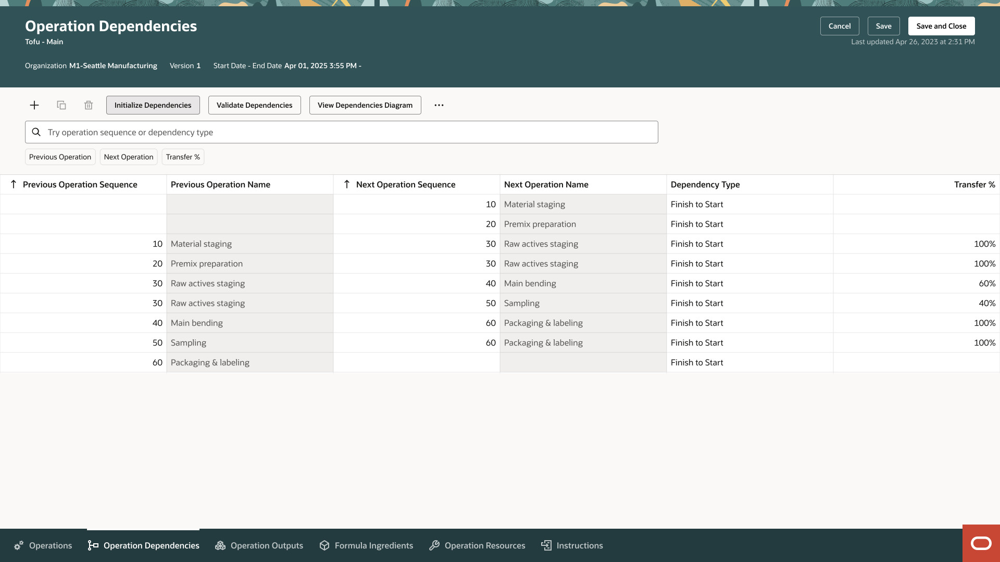
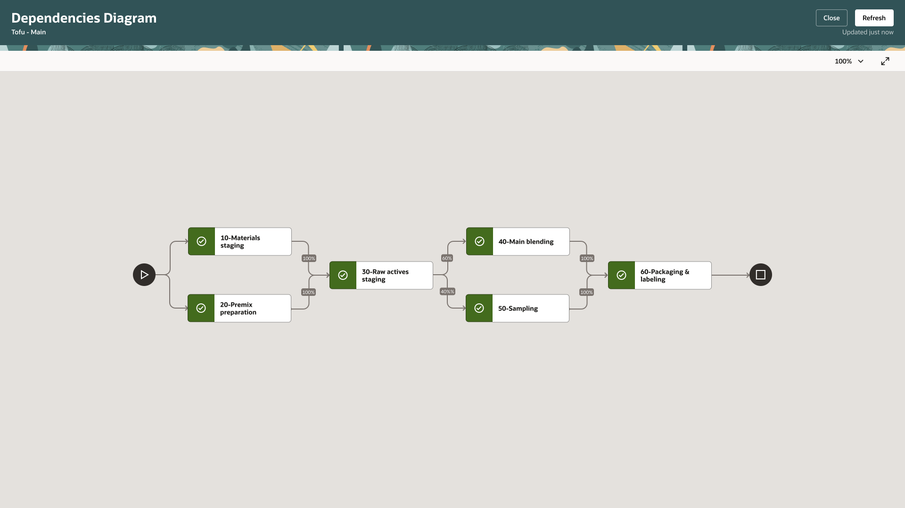
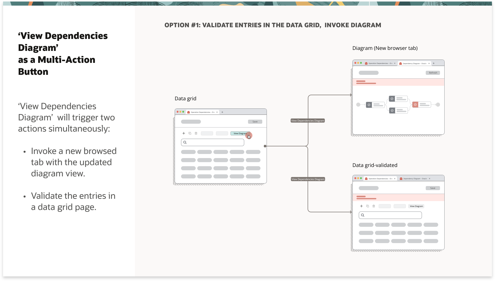
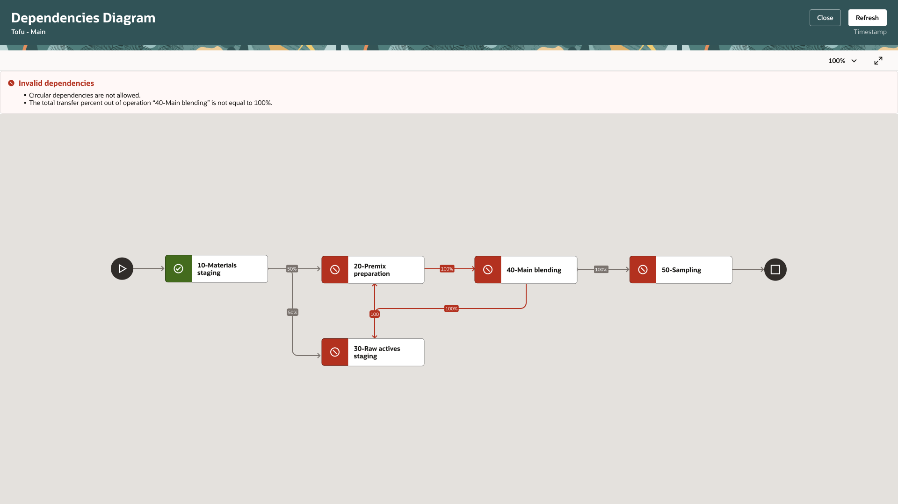

A visual modeling tool enabling manufacturers to define parallel operations — turning complex manufacturing logic into something anyone on the floor could understand.
01 — The Challenge
Manufacturing in electronics, furniture, and packaging requires the ability to run certain tasks in parallel — to fully utilize labor and equipment with minimal downtime. But Oracle's Work Definition only modeled operations sequentially, forcing engineers into workarounds that distorted their data and inflated their timelines.
Users were setting "one-minute lead times" to trick the software into allowing parallel starts — a sign the product had a real gap to close.

Sequential vs. parallel execution — the same operations take significantly longer when forced to run one at a time.
Business Impact
Design a solution allowing manufacturing engineers to specify which operations run in parallel — based on dependency relationships between operation start and completion — without compromising data integrity or established workflows.
02 — Research
I consulted Oracle Cloud Customer Connect for peer feedback and mapped the experience across three distinct user types — each with different needs and contexts around parallel operations.
This wasn't a hypothesis. Manufacturers requested parallel operations as far back as 2018, and again in 2020 — real production lines run steps simultaneously, yet the system forced them into sequential routings. Oracle credits the shipped capability directly to that demand: it ships officially labeled “from a customer submitted idea.” The actual threads, and the insight I pulled from each, are below.

Real requests from Oracle Cloud Customer Connect — peer feedback that surfaced the parallel-operations gap, paired with the insights I pulled from each.

The parallel operations experience spans three roles — from planning to floor execution.
Manufacturing Engineer
Defines complex dependency relationships (Finish-to-Start vs. Start-to-Start) to minimize overall lead time. Needs a way to author and validate parallel logic without leaving their authoring context.
Production Supervisor
Monitors real-time progress and intervenes if bottlenecks appear. Needs to see which parallel operations are running and approve changes without disrupting the floor.
Production Operator
Needs to know exactly which operation to start — right now. Parallel logic needs to be surfaced clearly so they can act immediately when a Start-to-Start dependency is satisfied.
03 — Design Principles
Before exploring any solutions, I established four guiding principles to keep every design decision tethered to real user needs.
04 — Information Architecture
I restructured the Work Definition experience to accommodate new data points without overwhelming existing users. The solution centers on a new dedicated tab that introduces three new relationship types:
05 — Exploration
The core challenge: balancing the user's need for a robust, interactive flowchart against the technical boundaries of Oracle's Redwood Design System. Oracle requires consistent UI across the SCM suite, which means using existing, tested components over custom code.
I explored four low-fidelity architectural options, each representing a different tradeoff between authoring power and visual clarity:

Early wireframe exploration — three distinct approaches to surfacing the dependency diagram.


Constraints shifted focus from "interactive editing" to "visual validation." The diagram's primary value isn't authoring — it's giving manufacturing engineers a sanity check for the data they've already entered in the grid. This reframing unlocked the dedicated Canvas Page approach.
06 — The Solution
The final design pairs two complementary surfaces: a structured datagrid for precise authoring, and a dedicated canvas page for visual validation — connected by a strict save flow that protects data integrity.

The Operation Dependencies tab — structured authoring of parallel relationships in a datagrid.
A new "Operation Dependencies" tab in Work Definition gives manufacturing engineers a structured space to author complex relationships. Each row defines a dependency between two operations, including:

The Dependencies Diagram — a dedicated canvas page for visual validation of the authored flow.
From the datagrid, engineers navigate to a dedicated Canvas Page to view their Operation Dependency Diagram. Rather than a duplicate authoring surface, the diagram functions as a read-only validation tool — letting engineers confirm that what they entered in the grid matches their actual shop floor mental model before execution begins.
The Redwood Diagram Node component represents each operation visually, with arrows and transfer percentages showing exactly how work flows between parallel branches.

The two-page flow — datagrid and diagram stay in sync via a strict save behavior.
Since the diagram opens in a separate browser window, I designed a strict save flow to handle the state between views. When a user edits the datagrid after opening the diagram, the diagram is flagged as stale and must be refreshed — ensuring engineers always validate against the latest authored data, never a cached snapshot.

Invalid dependency state — circular loops and bad transfer percentages surface clearly with recovery guidance.
Parallel logic introduces risks invisible in a standard grid — circular dependencies, multiple last operations, transfer percentages that don't sum to 100%. I collaborated with developers to categorize every client and server-side error, then designed banners and inline messages that explain exactly what's wrong and how to fix it.
The diagram turns red for invalid nodes and renders the problematic edges in a distinct error color — making issues unmissable at a glance.
Cross-Product Impact
The project didn't end at Work Definition. Parallel dependency data is only useful if it's visible to the people executing the plan — so I worked with each downstream team to surface it in their own workbench, in the format their role actually needs.

Work Orders — Accurate Scheduling
I surfaced Start-to-Start relationships directly in the work order list, so the scheduled duration reflects true parallel-adjusted lead time instead of inflated sequential totals.

Supervisor Workbench — Real-Time Monitoring
I added a parallel-status indicator that flags when a concurrent branch is lagging, so supervisors can intervene before it affects operations waiting on it.

Operator Workbench — Clear Task Prioritization
The task list promotes any operation the moment its Start-to-Start dependency is satisfied, so operators always know the next task to start without interpreting ambiguity.
07 — Impact
08 — Reflection